|
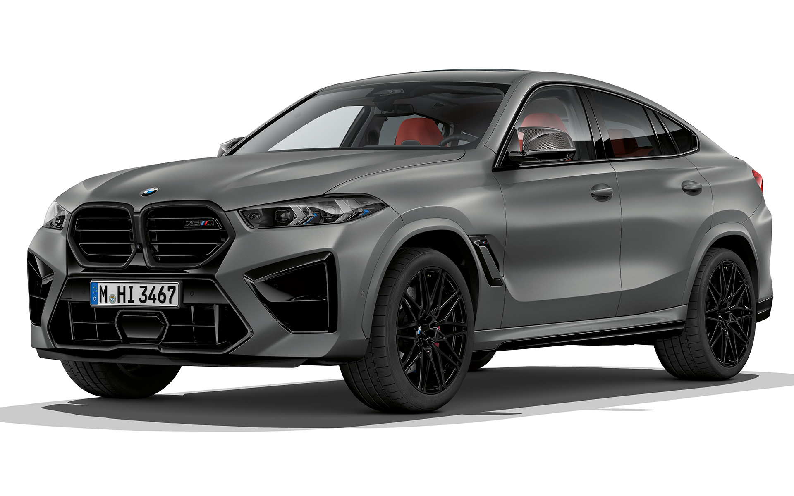 |
BMW X6 M |
The BMW X6 M is a high-performance luxury SUV that combines the practicality of an SUV with the athleticism of a sports car. Powered by a robust V8 engine, it delivers impressive acceleration and dynamic handling. Its bold, aggressive design features a distinctive coupe-like silhouette, along with sporty details like larger air intakes and M badging. Inside, the X6 M offers a luxurious cabin with advanced technology, premium materials, and ample space for passengers and cargo. It's designed for those who seek thrilling performance without sacrificing comfort or versatility. |
 |
BMW IX |
The BMW iX is a fully electric SUV that represents the brand's commitment to sustainability and innovation. Featuring a striking design with a futuristic aesthetic, the iX boasts a spacious and luxurious interior filled with high-quality materials and cutting-edge technology. It offers impressive electric range and powerful performance, with instant torque for exhilarating acceleration. The iX is equipped with advanced driver-assistance systems and features like a large curved display for infotainment and controls. Designed for both comfort and functionality, the BMW iX caters to eco-conscious drivers looking for a premium electric vehicle experience. |
| 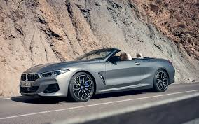 |
BMW M8 CABRIOLET |
The BMW M8 Cabriolet is a high-performance luxury convertible that combines opulent design with exhilarating driving dynamics. Powered by a potent twin-turbocharged V8 engine, it delivers impressive horsepower and torque, ensuring thrilling acceleration. The M8 Cabriolet features a sleek, aerodynamic silhouette and an elegant interior equipped with premium materials, advanced technology, and driver-focused controls. With its retractable soft-top, it offers an open-air driving experience while maintaining the refinement and comfort expected from a BMW. The M8 Cabriolet is ideal for those seeking a blend of luxury and performance in a striking package. |
 |
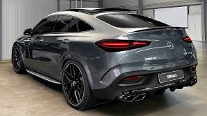 |
GLE Coupe |
The Mercedes-Benz GLE Coupe is a stylish and sporty luxury SUV that blends the practicality of an SUV with the sleek design of a coupe. It features a powerful range of engines, including options for enhanced performance, and is equipped with advanced technology and luxurious materials throughout the interior. The GLE Coupe offers spacious seating and a high-tech infotainment system, ensuring both comfort and connectivity. Its athletic stance and bold lines give it a commanding presence on the road, making it an attractive choice for those seeking a dynamic driving experience combined with everyday versatility. |
| 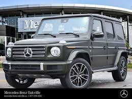 |
G-Class SUV |
The Mercedes-Benz G-Class SUV, often referred to as the "G-Wagon," is an iconic luxury off-road vehicle known for its distinctive boxy design and rugged capabilities. Originally developed for military use, it has evolved into a status symbol, combining luxury with outstanding off-road performance. |
| 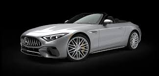 |
sl roadster |
The Mercedes-Benz SL Roadster is a classic luxury convertible that epitomizes elegance and performance. Known for its sleek design and sporty silhouette, the SL features a retractable hardtop, allowing for an open-air driving experience while maintaining a refined coupe-like appearance when closed. |
|
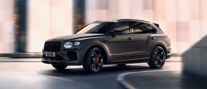 |
BENTAYGA |
The Bentley Bentayga is a luxurious SUV that combines opulence with exceptional performance. Launched as Bentley's first foray into the SUV market, it showcases the brand's signature craftsmanship and attention to detail. |
| 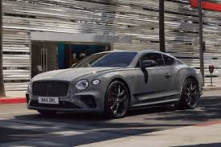 |
Continental GT |
The Bentley Continental GT is a luxury grand tourer renowned for its blend of performance, elegance, and craftsmanship. With a striking design that features a low profile and iconic oval grille, the Continental GT exudes sophistication and presence. |
| 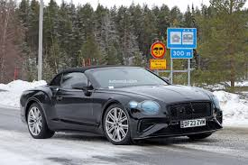 |
Continental GT PHEV Convertible |
The Bentley Continental GT PHEV Convertible is a sophisticated grand tourer that combines luxury with eco-friendly performance. This plug-in hybrid electric vehicle (PHEV) features a stunning design that maintains the Continental GT's iconic aesthetics, complete with a retractable soft-top for an open-air experience. |
| 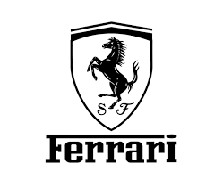 |
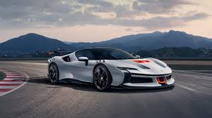 |
SF90 STRADALE |
The Ferrari SF90 Stradale is a groundbreaking supercar that exemplifies Ferrari's engineering prowess and commitment to performance. As a plug-in hybrid, it combines a powerful twin-turbocharged V8 engine with three electric motors, producing a staggering total output of around 1,000 horsepower. This allows for blistering acceleration, with a 0-60 mph time of just around 2.5 seconds. |
 |
PUROSANGUE |
The Ferrari Purosangue is the brand's first-ever four-door SUV, marking a significant departure from its traditional sports car lineup. Designed to blend luxury with performance, the Purosangue features a striking, athletic design that retains Ferrari's iconic styling cues while offering more space and versatility. |
| 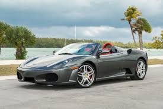 |
F430 |
The Ferrari F430 is a celebrated supercar that exemplifies Ferrari's racing heritage and engineering excellence. Introduced in 2004, it features a sleek and aerodynamic design, characterized by sharp lines and an aggressive stance that enhances its sporty appeal. |